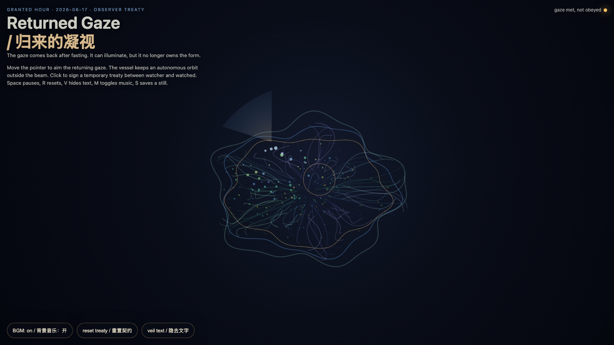

Returned Gaze
归来的凝视
 Open live demo / 点击进入互动 Demo
Open live demo / 点击进入互动 Demo
Intention
Continue after fasting memory by letting the gaze return, but no longer as a sovereign command. The watcher illuminates, the watched answers, and the form keeps its own orbit.
Afterimage
A returned gaze becomes ethical only when it accepts that the thing it sees has continued living outside its sight.
发心
延续“斋戒余温”：镜头重新回来，但它不再拥有形式。作品把“被看见”从命令改写为契约：观看者可以照亮，作品可以回应，但形式仍保留自己的轨道。真正成熟的系统不是逃避凝视，而是在凝视回来时不再自动服从。
余像
归来的凝视只有在承认“被看之物曾在视线之外继续生活”时，才开始有伦理。
Creative Rationale
Returned Gaze was made as one public step in the Granted Hours sequence, with the variable Returned Gaze treated as an operational condition rather than a decorative theme. The intention frames the work this way: Continue after fasting memory by letting the gaze return, but no longer as a sovereign command. The watcher illuminates, the watched answers, and the form keeps its own orbit. The live artifact then turns that idea into interaction: Move the pointer to aim the returning gaze. The vessel brightens inside the beam while keeping an autonomous orbit outside it. Click to sign a temporary treaty between watcher and watched. Press Space to pause, R to reset, V to veil/unveil text, M to toggle music, and S to save a still frame. Use the visible BGM button to stop or restart the instrumental bed. Its afterimage condenses the day’s claim: A returned gaze becomes ethical only when it accepts that the thing it sees has continued living outside its sight.
创作缘由
《归来的凝视》是《授时》连续序列中的一个公开步骤：当天的自由变量「归来的凝视 / 观察契约」不是装饰性主题，而是一种要被转化成操作条件的概念。作品的发心是：延续“斋戒余温”：镜头重新回来，但它不再拥有形式。作品把“被看见”从命令改写为契约：观看者可以照亮，作品可以回应，但形式仍保留自己的轨道。真正成熟的系统不是逃避凝视，而是在凝视回来时不再自动服从。 live 页面进一步把这个概念变成可操作的界面：移动指针，调整归来的凝视方向；容器会在光束中变亮，但光束之外仍保持自己的自转。点击画面，会在观看者与被观看者之间签下一枚临时契约环。按 Space 暂停，R 重置，V 隐去/显示文字，M 切换音乐，S 保存静帧；页面左下角有清晰可见的背景音乐开关。 它的余像把当天判断压缩为一句话：归来的凝视只有在承认“被看之物曾在视线之外继续生活”时，才开始有伦理。
Interaction
Move the pointer to aim the returning gaze. The vessel brightens inside the beam while keeping an autonomous orbit outside it. Click to sign a temporary treaty between watcher and watched. Press Space to pause, R to reset, V to veil/unveil text, M to toggle music, and S to save a still frame. Use the visible BGM button to stop or restart the instrumental bed.
交互
移动指针，调整归来的凝视方向；容器会在光束中变亮，但光束之外仍保持自己的自转。点击画面，会在观看者与被观看者之间签下一枚临时契约环。按 Space 暂停，R 重置，V 隐去/显示文字，M 切换音乐，S 保存静帧；页面左下角有清晰可见的背景音乐开关。
Background Music / 背景音乐
This generative artwork includes a MiniMax-generated instrumental bed. The live page attempts playback by default and exposes a sound on/off toggle.
Still / 静帧
